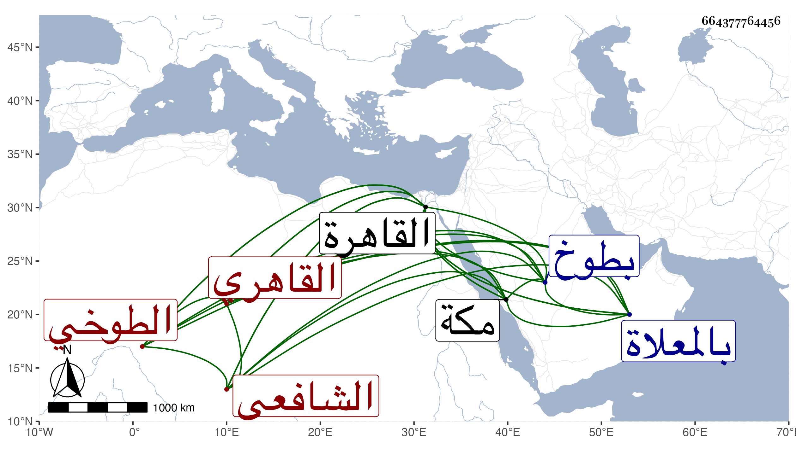

0902Sakhawi.DawLamic.ITO20230111-ara1.EIS1600.664377764456
Biography ID: 664377764456
362
أحمد بن محمد بن عبد الرحمن بن محمد بن رجب الشهاب الطوخي ثم القاهري الشافعي الآتي أبوه ويعرف بابن رجب وفي القاهرة بالطوخي . ولد في سنة سبع وأربعين وثمانمائة بطوخ بني مزيد ونشأ بها فقرأ القرآن والمنهاج التنقيح وألفيتي الحديث والنحو والملحة والشاطبية وجمع الجوامع وبعضا من غيرها وعرض على جماعة كالشمني والأقصرائي ، وقرأ الشاطبية بتمامها على الشمس بن الحمصاني وتردد إلى القاهرة مرارا ثم قطنها ، وحج غير مرة وجاور بمكة شهرا وأدمن الاشتغال في الفقه والحديث والأصلين والعربية والصرف والمنطق والمعاني والبيان والفرائض والحساب والقراءات والتصوف وغيرها ، وبرع وأشير إليه بالفضيلة التامة ، ونظم جمع الجوامع والورقات لإمام الحرمين والنخبة والمنهاج وشرح بعض مناظيمه وشرح في نظم المغني وغير ذلك وتكسب بالشهادة وأم بالباسطية وخطب بها وبغيرها نيابة ومن شيوخه الجلال البكري وأبو السعادات والمحيوي الطوخي والشرف البرمكيني والزين زكريا والأبناسي وأخي وعبد الحق والعلاء الحصني وابن أبي شريف والجوجري والفخر الديمي والزين جعفر ، ومن المالكية السنهوري وبعضهم في الأخذ أكثر من بعض وسمع على النشاوي والقمصي وحفيد الشيخ يوسف العجمي وابنة الزين القمني وآخرين وكثير منه بقراءته وقرأ علي شرحي للألفية مرة بعد أخرى وكذا حمل عني شرح المؤلف بقراءته وقراءة غيره وأكثر عني رواية كالكتب الستة ودراية وأملى وكتب بخطه من تصانيفي أشياء ومدحني بعدة قصائد سمعتها من لفظه مع أشياء من نظمه مما امتدح به ابن مزهر وابن حجي والكمال بن ناظر الخاص وغير ذلك وأقرأ الطلبة بالباسطية وغيرها وعرض عليه الزين زكريا قضاء بلده وامتنع واقتصر على التكسب بالشهادة وحج غير مرة آخرها في موسم سنة اثنتين وتسعين وجاور في التي تليها وأقرأ هناك العربية والفقه وحضر قليلا عند القاضي امتدحه بل قرأ علي في الاستيعاب ولازم دروسي إلى أن تعلل فدام نحو شهرين ثم مات في ربيع الثاني سنة ثلاث وتسعين ودفن بالمعلاة . وكانت جنازته مشهودة وخلف ذكرا وأنثى وأما وزوجة رحمه الله وعوضه الجنة .
